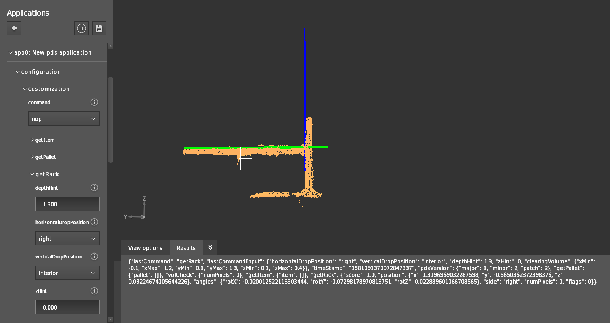

getRack
The getRack functionality of PDS is designed to help an AGV safely place a pallet or load into a standard racking system. The getRack function has two phases:
Detection of the position of the rack,
Detection of any obstacle present within a specified volume.

In the above picture, the vertical blue line represents the estimated inner edge of the upright structure, and the horizontal green line represents the estimated upper edge of the horizontal beam, constituting the shelf on which the pallet will be placed.
Coordinate system
The origin of the rack coordinate system is the intersection of the detected upright and the beam, on the plane formed by the beam and the upright’s front faces. If the detected upright and beam do not intersect, the origin of the rack coordinate will be placed at the intersection of the horizontal beam and the line which is orthogonal to both the beam and the upright. If the left upright is segmented then the Y-axis of the established rack coordinate system points to the right and if the right upright is segmented then the Y-axis will point towards the left.
Input
Command
The input to the getRack command must be provided in JSON.
Below is an example, assuming an instantiated PDS app app0:
{"applications": {
"instances": {
"app0": {
"configuration": {
"customization": {
"command": "getRack",
"getRack": {
"depthHint": 1.2,
"horizontalDropPosition": "left",
"verticalDropPosition": "interior",
"zHint": -0.4,
"clearingVolume": {
"xMax": 1.2,
"xMin": -0.1,
"yMax": 1.3,
"yMin": 0.1,
"zMax": 0.4,
"zMin": 0.1
}
}
}
}
}
}
}}
depthHint
Name |
Description |
|---|---|
|
The depth hint is an approximate distance in meters along the X-axis from the origin of the reference coordinate system (typically the fork tines coordinate system) to the plane corresponding to the front face of the beam. |
horizontalDropPosition
The drop operation of the pallet is based on the horizontalDropPosition parameter.
There are three configurations available for this parameter:
Name |
Description |
|---|---|
|
|
verticalDropPosition
This parameter informs the PDS about the drop location of the pallet. Depending on the vertical drop position, this parameter can be configured as:
Name |
Description |
|---|---|
|
|
zHint
Name |
Description |
|---|---|
|
Approximate distance in meters along the Z-axis from the origin of the reference coordinate system (typically the fork tines coordinate system) to the upper edge of the horizontal beam on which the load is expected to be placed. |
clearingVolume
Name |
Description |
|---|---|
|
Volume, defined by its |
Output
The output of a getRack command is formatted in JSON.
An example JSON result, where the position of the rack was identified is shown below:
"getRack": {
"angles": {
"rotX": 0.00089085,
"rotY": 0.00410702,
"rotZ": 0.0177895
},
"flags": 0,
"horBeamVoi": {
"xMax": 1.63,
"xMin": 1.17,
"yMax": 1,
"yMin": -1,
"zMax": -0.105,
"zMin": -0.805
},
"numPixels": 0,
"position": {
"x": 1.46194,
"y": 0.636352,
"z": 0.491981
},
"score": 0,
"side": "left",
"uprightVoi": {
"xMax": 1.63,
"xMin": 1.17,
"yMax": 1.2,
"yMin": 0,
"zMax": 1.3,
"zMin": -0.3
}
}
angles, position, side and score
Name |
Description |
|---|---|
|
Three rotation components, |
|
The |
|
Type of the rack coordinate system. Either “right” for right-handed or “left” for left-handed. |
|
Detection score of the rack (0 or 1). |
flags
The flags provides a bitmask with debugging information for getRack.
Bit No. |
Name |
Description |
|---|---|---|
0 |
|
The horizontal beam of the rack grid location could not be segmented. |
1 |
|
Multiple horizontal beam candidates were segmented, the most plausible was selected. |
2 |
|
The threshold of pixel coverage over the surface area of the beam was not met. |
3 |
|
A vertical upright was not detected, the rack frame was established based on the segmented beam, sweeping volume, and (optionally) the floor. |
4 |
|
Multiple upright candidates (on the anchor side of interest) were segmented, the most plausible was selected. |
5 |
|
The threshold of pixel coverage over the surface area of the upright was not met. |
6 |
|
The relative position of the upright candidate and the horizontal beam is implausible. |
7 |
|
The origin of the computed rack frame is outside of an expected tolerance (indicative of a beam-only localization anchoring to an obstacle). |
8 |
|
An obstacle was detected within the shelf sweeping volume with respect to the established rack frame. |
The resultant flag value is a decimal value representing which flags are activated or not.
For example, if the value of the flag is set to 384 then the resultant binary value is 11000000, that is, bit numbers 7 and 8 were set to 1 (BAD_TRANSFORM and SHELF_OBSTACLE).
In the below section, the possible reasons why the flags are set are discussed in detail.
NO_BEAM
The horizontal beam of the rack grid location could not be segmented (this is a critical error). Possible reasons are:
Incorrect
depthHint: the algorithm looks for the beams around the given depth hint. The default tolerance for depth hint is 0.23 m,Incorrect Z-hint: the algorithm looks for beams around the provided Z-hint. The default tolerance is 0.4 m,
No beam candidate meets the minimum length requirement: the algorithm looks for beams with a default minimum length of 1.0 m,
No beam candidate meets min or max height requirement: the algorithm looks for beams with a minimum or maximum height of respectively 6 and 15 cm.
A space of at least 0.05 m is expected below the beam to avoid considering the top of another loaded pallet as a beam.
MULTIPLE_BEAMS
Multiple horizontal beam candidates were segmented, and the one with the largest extent in the Y-direction was selected. This does not mean that the detection was unsuccessful. If multiple beams are not expected, then the user can abort the operation. Possible reasons are:
Presence of a loaded pallet or other obstacle above or below the beam,
Presence of a true second beam in the scene,
More than one beam candidate meets the minimum length and minimum or maximum height requirements.
BEAM_COVERAGE
A threshold of pixel coverage over the surface area of the beam was not met. Possible reasons are:
The segmented beam has lots of non-planar points,
The segmented beam does not meet the minimum coverage requirement.
NO_UPRIGHT
A vertical upright was not detected, and the rack frame was established based on the segmented beam, sweeping volume, and (optionally) the floor. Possible reasons are:
Incorrect
horizontalDropPosition: the algorithm looks to either the right side or left side, not to both sides excepthorizontalDropPosition = center,No upright close to the beam,
No upright candidate meets the minimum length requirement: the algorithm looks for uprights with a minimum length of 0.7 m,
No upright candidate meets the minimum or maximum width requirement: the algorithm looks for uprights with a minimum or maximum width of respectively 3 or 12 cm by default.
MULTIPLE_UPRIGHTS
Multiple upright candidates (on the anchor side of interest) were segmented. The leftmost or the rightmost was selected, depending on the horizontalDropPosition.
This does not mean that the detection was unsuccessful.
If multiple uprights are not expected, then the user can abort the operation.
Possible reasons are:
Loaded pallet or other obstacle above or below the beam,
True second upright in the scene,
More than one upright candidate meets the minimum length and minimum or maximum width requirements.
UPRIGHT_COVERAGE
A threshold of pixel coverage over the surface area of the upright was not met. Possible reasons are:
The segmented upright has lots of non-planar points,
The segmented upright does not meet the minimum coverage requirement (after 3D plane fit).
Note
If NO_UPRIGHT flag is set, then UPRIGHT_COVERAGE is also set.
NO_JOIN
The relative position of the upright candidate with respect to the horizontal beam is implausble. Possible reasons are:
The segmented beam and segmented upright do not intersect.
The upright detection failed, most likely because it is not visible.
Note
If NO_UPRIGHT flag is set, then NO_JOIN is also set.
BAD_TRANSFORM
The origin of the computed rack frame is outside of an expected tolerance (indicative of a beam-only localization anchoring to an obstacle). Possible reasons are:
Position of selected upright deviates from expected position (only Y-coordinate is considered): the algorithm expects the upright to be within tolerance on either the left side or right side.
SHELF_OBSTACLE
An obstacle was detected within the shelf sweeping volume with respect to the established rack frame. Possible reasons are:
The maximum number of pixels within the clearing volume was exceeded (default: 10).
horBeamVoi and uprightVoi
Name |
Description |
|---|---|
|
Volume in which the algorithm searches for an horizontal beam. |
|
Volume in which the algorithm searches for a vertical upright. |
numPixels
Name |
Description |
|---|---|
|
The number of pixels in the volume of interest. Typically, this is used to verify that the rack is empty before dropping a load. |